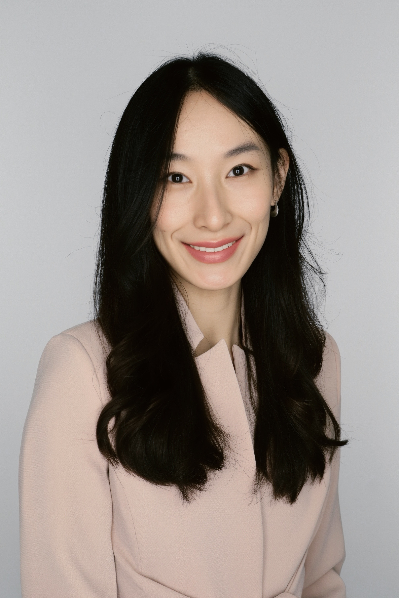

Vyvia Shen
Psychology and Art History at Oberlin College, preparing for a career in counseling psychology, clinical practice, and community-based intervention research.
About
I'm a senior at Oberlin College double-majoring in Psychology and Art History, with a minor in Feminist Studies, graduating in May 2027.
My work so far has been with children with disabilities, hospice patients and their families, and students in schools and museums. Across those settings I've come to believe that good research starts from close clinical contact with the people it serves.
I grew up in Shanghai and have lived in Spain and Georgia. I speak Mandarin, English, and Spanish.
Where I'm headed
- May 2027B.A., Oberlin College
- Fall 2027Master's in counseling, building clinical experience
- NextResearch experience, then a Ph.D. in counseling or clinical psychology
Long term, I want to split my time between seeing clients and doing intervention and implementation research, using research to build programs that work in practice. I'm especially drawn to evidence-based psychotherapy for Asian and other minority communities, and to working with families across the lifespan.
Interests
- Trauma-informed care
- Child-parent psychotherapy
- Socioemotional development
- Marginalized and disabled children
- Educational interventions
- Multicultural research
- Expressive arts